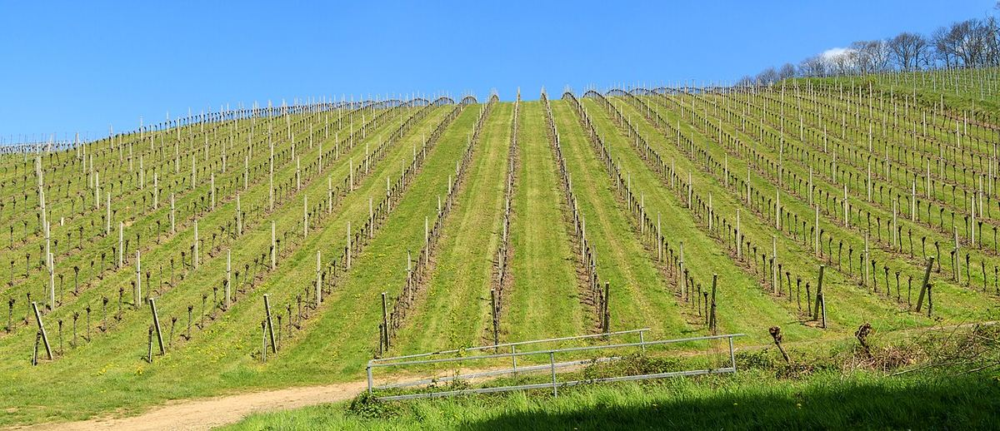

Baden
Il Baden è la regione vitivinicola più meridionale della Germania, una lunga fascia che si estende dalla valle del Tauber fino al lago di Costanza, in gran parte di fronte all’Alsazia. È la patria tedesca dei Pinot, con lo Spätburgunder come vitigno principale.

Storia
La viticoltura nel Baden ha radici romane e si sviluppò nel Medioevo grazie a monasteri e signori feudali. Nell’Ottocento la regione subì, come il resto d’Europa, l’oidio e la fillossera, e molti piccoli viticoltori si organizzarono poi in cooperative. Queste hanno ancora un peso molto importante nella regione: producono una parte considerevole del vino del Baden, e a Breisach, sul Reno, si trova una delle maggiori cantine cooperative d’Europa. Accanto a esse, numerose tenute di famiglia hanno dato alla regione un grande prestigio, in particolare per i loro Spätburgunder e i bianchi della famiglia dei Pinot.
Territorio e clima
Il Baden si estende per circa quattrocento chilometri, soprattutto lungo il lato orientale della valle dell’Alto Reno, ai piedi della Foresta Nera. È la regione più calda e soleggiata della Germania, motivo per cui la normativa europea la colloca in una zona viticola diversa da quella del resto del paese, la stessa dell’Alsazia. Si divide in diversi distretti: il Tauberfranken, a nord; la Badische Bergstrasse e il Kraichgau; l’Ortenau, intorno a Durbach; il Breisgau; il Kaiserstuhl, antico massiccio vulcanico isolato nella pianura del Reno, che è la zona più calda; il Tuniberg; il Markgräflerland, tra Friburgo e Basilea; e il Bodensee, sulle rive del lago di Costanza, con vigneti a quote più elevate.
Suoli
La gamma dei suoli è ampia: rocce vulcaniche e spessi strati di loess nel Kaiserstuhl, granito e gneiss nell’Ortenau, calcare e loess nel Markgräflerland e nel Tuniberg, calcare conchilifero nel Kraichgau e nel Tauberfranken, e depositi glaciali intorno al lago di Costanza.
Vitigni e stili
Lo Spätburgunder (Pinot Nero) è il vitigno più coltivato del Baden e dà rossi che vanno da stili fruttati a vini strutturati e affinati in barrique di grande ambizione, soprattutto nel Kaiserstuhl. Seguono il Müller-Thurgau, il Grauburgunder (Pinot Grigio), il Weissburgunder e il Gutedel (Chasselas), specialità del Markgräflerland. Nell’Ortenau il Riesling, chiamato localmente Klingelberger, ha una lunga tradizione, e si coltivano anche Chardonnay, Silvaner, Gewürztraminer e Sauvignon Blanc. Sul lago di Costanza si produce un rosato tradizionale di Spätburgunder chiamato Weissherbst. I vini del Baden sono in genere secchi, di buon corpo e con un’acidità più moderata rispetto alle regioni settentrionali.